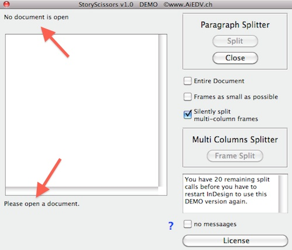
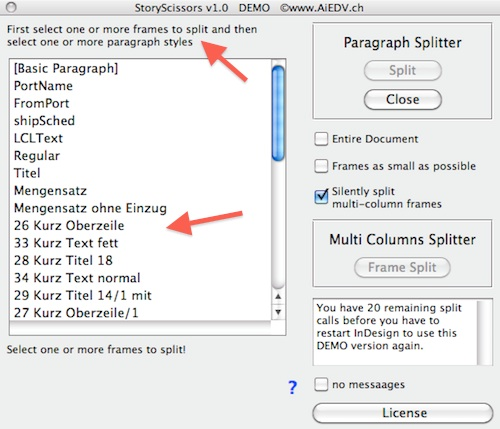
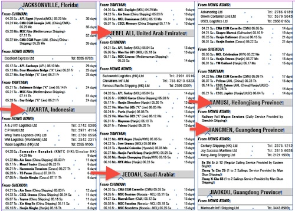
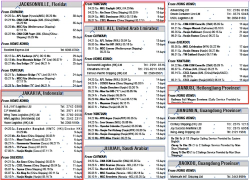
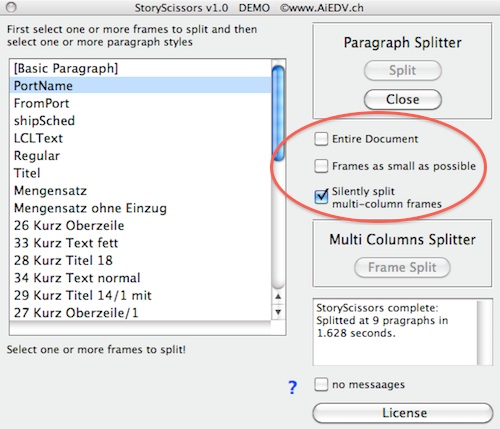

StoryScissors Manual
StoryScissors.jsx
Javascript for InDesign CC, CS6
Version: 2.0
License: GPL3, Open Source
PURPOSE:
Cut/split text flowing in chained frames into single text frames at given paragraph styles.
Useful to split
- classified columns into one ad per frame
- official publications into sections and subsections
- schedules in blocks of departure stations
or
manually split at any desired paragraph
and as an extra:
split text frames, defined to have multiple columns, into chained single column text frames.
Split Stories Using StoryScissors
Double click the script 'StoryScissors.jsx' from InDesign's Scripts palette and this window shows up:

The text fields, marked with red arrows, give you some hints on what you have to do.
In this case, you should open a document.
So, best is to open a document!:

The next hints say, that we should select a text frame and one or more paragraph styles.
In this case, we want to split up a port schedule, contained in chained text frames, at the departure ports (marked with red arrows):

We select one of the chaines frames (it also may be a multi columns frame), select the paragraph style 'PortName' and hit the [ Split ] button.
After completion, the entire chain is split into single text frames containing just one departure port (not all, but some of the split text boxes are framed red):

That's it.
Split Hints
a) Set the cursor into a paragraph and hit [ Split ]: The frame will be split at the beginning of this paragraph.
b) Select multiple frames and hit [ Split ]: All selected text frames will be split at the selected paragraph style(s).
c) Select multiple frames and hit [ Frame Split ]: All selected multi column text frames will be split into chained single column frames.
StoryScissors Options
Several options may be checked – in the below screen shot circled red:

Options are:
Entire Document
When checked, the entire document will be split. We have to choose the paragraphs to split at and to hit the [ Split ] button.
We do not have to select a text frame.
Frames as small as possible
When checked, the split frames will be made as small as needed.
Silently split multi-column frames
When checked, we will not be asked to automatically split multi column text frames in single column chained frames.
no messages
When checked, no processing messages will be shown.
DISCLAIMER:
Absolutely no warranty.
Author: Andreas Imhof, ©www.aiedv.ch